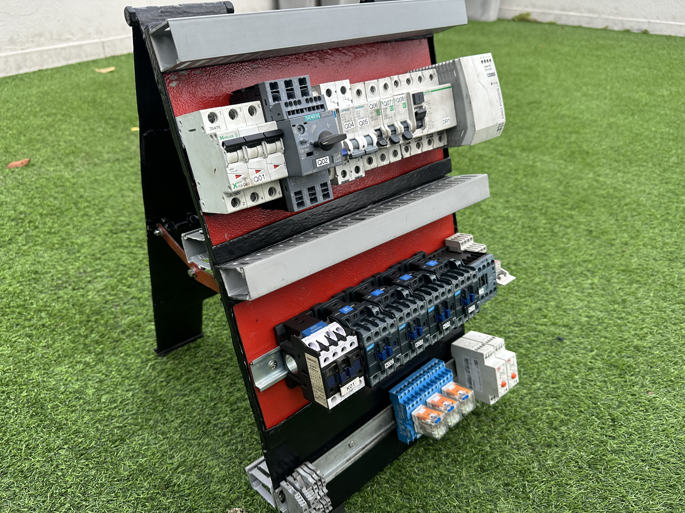

✖
❮
 ❯
❯
Bem-vindo ao nosso site. Este espaço foi desenvolvido para apresentar, de forma clara e profissional, o projeto Melhoria Contínua, reunindo informações, documentos técnicos, imagens e visualizações que demonstram todo o processo de desenvolvimento. Explore cada seção e conheça os detalhes, desafios e soluções aplicadas ao longo deste trabalho.

Nesta apresentação, vamos explorar o poder da inovação e como ela impulsiona o sucesso da aprendizagem. Através de soluções inovadoras, estamos preparados para enfrentar os desafios atuais, criar maneiras mais fácies de desenvolver o conhecimento técnico e alcançar resultados excepcionais. Nesta jornada, iremos mergulhar nas principais áreas do nosso processo. Esteja preparado para se inspirar e descobrir como a inovação pode levar o nosso sucesso profissional a novos patamares.
O projeto de uma bancada de testes elétricos para aprendizes tem como objetivo oferecer um ambiente prático e seguro para o estudo de eletricidade e eletrônica. A bancada permite a montagem e análise de circuitos de baixa tensão, utilizando fontes de alimentação, instrumentos de medição e dispositivos de proteção. O desenvolvimento considera aspectos de segurança, organização e facilidade de uso. Sua estrutura é projetada para ser resistente, ergonômica e de fácil manutenção. Assim, contribui para o aprendizado prático e o desenvolvimento de habilidades técnicas dos aprendizes.
O desenvolvimento deste projeto foi realizado de forma estruturada, utilizando ferramentas de análise e melhoria contínua para garantir eficiência e organização em todas as etapas.
Inicialmente, foi elaborado um fluxograma para mapear todo o processo, permitindo uma visualização clara das etapas envolvidas e facilitando a identificação de possíveis falhas ou pontos de melhoria.
Em seguida, foi aplicada a metodologia do ciclo PDCA (Planejar, Executar, Verificar e Agir), que auxiliou no planejamento das ações, na execução das atividades propostas, na verificação dos resultados obtidos e na implementação de melhorias contínuas ao longo do projeto.
Além disso, utilizou-se a matriz GUT (Gravidade, Urgência e Tendência) para priorizar os problemas identificados, permitindo focar nos pontos mais críticos e garantir uma tomada de decisão mais assertiva.
Dessa forma, o projeto foi desenvolvido com base em métodos organizados e eficientes, contribuindo para um resultado mais estruturado, confiável e alinhado aos objetivos propostos.
• Desenvolver uma bancada de testes elétricos segura e funcional para aprendizes.
• Promover o aprendizado prático e o desenvolvimento de habilidades técnicas.
• Garantir a eficiência e organização no processo de ensino-aprendizagem.
{kind=link}
{kind=link}